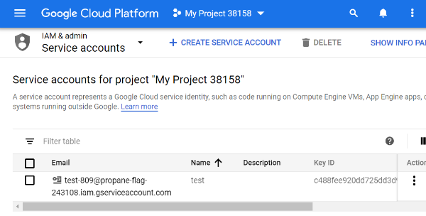
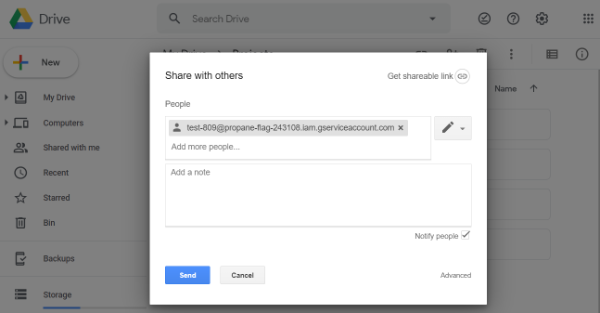
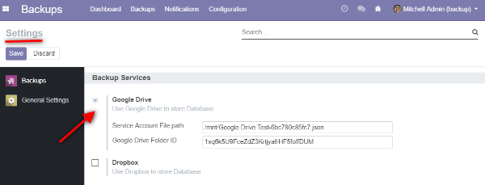

Configuration
Before starting backup jobs you need to make some configuration. Note: You need to have a Google account
- Login into your Google account
- Press Projects button on the Top menu
- In Popup window choose New Project
- Define the Name and Location (if needed) of Project
- Click on Create button
- In Top menu choose your New project
- Open navigation menu (Burger menu in the Left corner)
- Choose APIs and Services → Library
- Choose Google Drive API and turn it on
- Go to IAM& admin → Service account
- Click on Create and add the Private key
- Choose the Service account or create a new one
- If you create a new one please define Project → Owner
- Define the name of Service account
- Start Odoo with
--load=web,odoo_backup_sh or set the server_wide_modules option in the Odoo configuration file - Define a key type as JSON
- Click Create (key is created automatically)
- In opened page *IAM& admin* click on Service account
- Remember the e-mail of your service account


docker cp PATH_FROM/YOU_FILE_NAME.JSON CONTAINER_NAME:/PATH_TO

